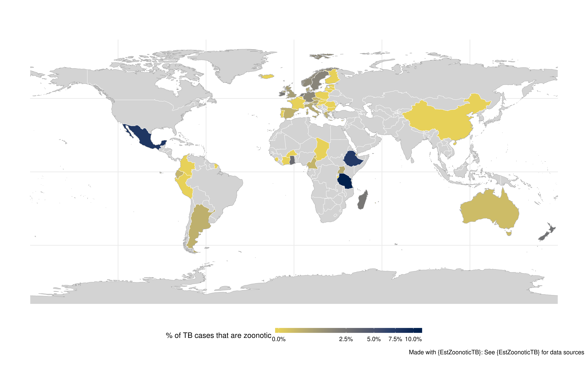
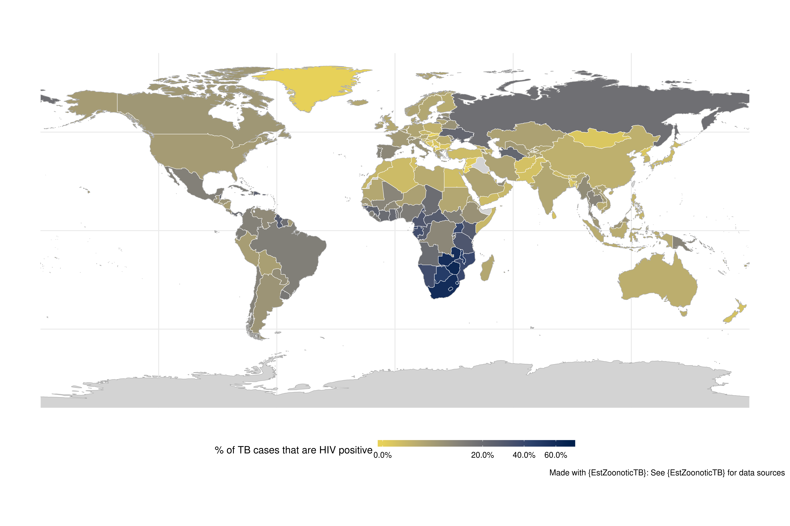
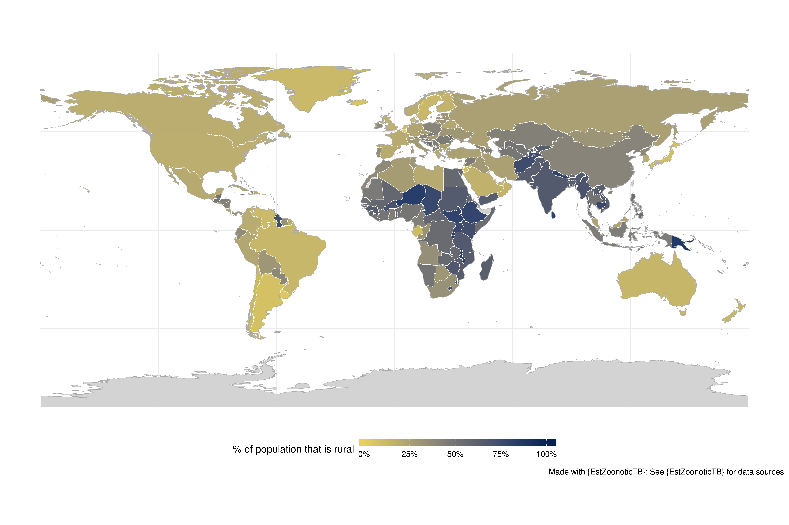

Overview
In this vignette the global distribution of zoonotic TB and variables thought to be related to zoonotic TB is explored using global maps. This includes TB incidence rates, the proportion of TB cases that are extra-pulmonary, the proportion of TB cases that are HIV postive, the presence of zoonotic TB in domesticated/wild animal populations, and the proportion of the population that is rural. Note that conclusions drawn from these maps require support from other forms of analysis as maps can be difficult to interpret (due to country size inducing visual bias).
Data
Use the latest available data for each variable. Note that this may introduce some bias - as TB incidence rates etc. have been changing over time. See the data exploration vignette for further details on data structure.
latest_data <- link_data(verbose = FALSE) %>%
get_latest_combined_data()
latest_data
#> # A tibble: 246 x 30
#> country country_code g_whoregion tb_year tb_cases tb_inc tb_inc_lo
#> <chr> <fct> <fct> <dbl> <int> <dbl> <dbl>
#> 1 Afghan… AFG Eastern Me… 2017 67000 189 122
#> 2 Albania ALB Europe 2017 580 20 17
#> 3 Algeria DZA Africa 2017 29000 70 53
#> 4 Americ… ASM Western Pa… 2017 6 10 8.8
#> 5 Andorra AND Europe 2017 1 1.5 1.3
#> 6 Angola AGO Africa 2017 107000 359 232
#> 7 Anguil… AIA Americas 2017 3 22 14
#> 8 Antigu… ATG Americas 2017 1 1.1 0.96
#> 9 Argent… ARG Americas 2017 12000 26 23
#> 10 Armenia ARM Europe 2017 1100 36 27
#> # … with 236 more rows, and 23 more variables: tb_inc_hi <dbl>,
#> # prop_tb_ep <dbl>, prop_hiv <dbl>, prop_hiv_lo <dbl>,
#> # prop_hiv_hi <dbl>, z_tb_year <dbl>, z_tb_id <int>,
#> # z_tb_geo_coverage <fct>, z_tb_study_pop <fct>,
#> # z_tb_multi_year_study <fct>, tb_z_prop <dbl>, tb_z_prop_lo <dbl>,
#> # tb_z_prop_hi <dbl>, tb_z_prop_se <dbl>, z_tb_animal_year <dbl>,
#> # z_tb_dom_animal <fct>, z_tb_wild_animal <fct>, demo_year <dbl>,
#> # population <dbl>, prop_rural <dbl>, animal_year <dbl>, cattle <int>,
#> # cattle_per_head <dbl>Proportion of tuberculosis (TB) that is zoonotic
prop_map <- function(df) {
map <- global_map(df, variable = "tb_z_prop",
variable_label = "% of TB cases that are zoonotic",
trans = "sqrt", fill_labels = scales::percent)
return(map)
}
prop_map(latest_data)
Proportion of TB cases that are HIV positive
Data is again from 2017 only.
link_data(verbose = FALSE) %>%
filter(year == 2017) %>%
global_map(variable = "prop_hiv",
variable_label = "% of TB cases that are HIV positive",
trans = "sqrt",
fill_labels = scales::percent)
Presence of zoonotic TB in animals
Data is latest from 2018 only.

Proportion of the population that is rural.
latest_data %>%
global_map(variable = "prop_rural",
variable_label = "% of population that is rural",
fill_labels = scales::percent)